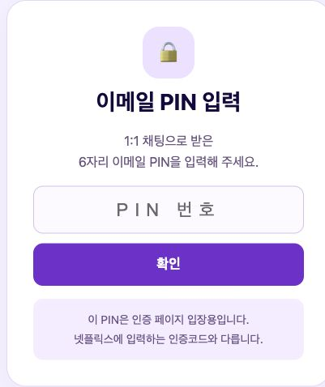
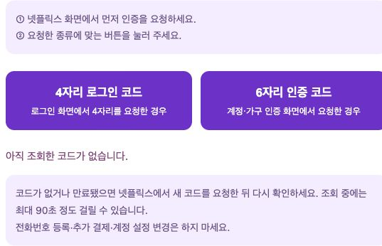

1:1 채팅으로 받은 전용 링크와 6자리 이메일 PIN을 준비해 주세요.

1:1 채팅으로 받은이메일 인증 링크를 눌러 주세요.
채팅에서 받은 6자리 PIN을입력하고 「확인」을 눌러 주세요.
넷플릭스에서 먼저 인증을 요청한 다음, 화면에 표시된 종류에 맞는 버튼을 눌러 주세요.

표시된 숫자 코드를 복사하거나 직접 입력하면 됩니다.계속 확인되지 않으면 구매하신 1:1 채팅으로 문의해 주세요.